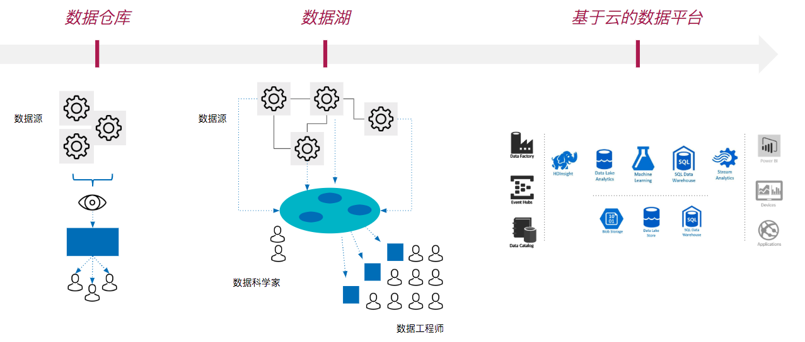
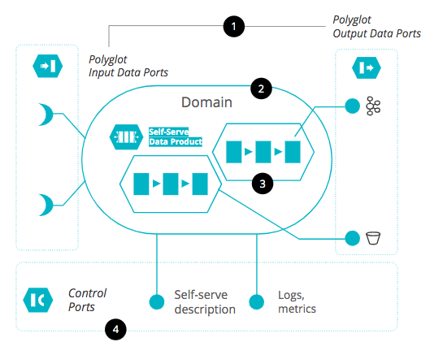
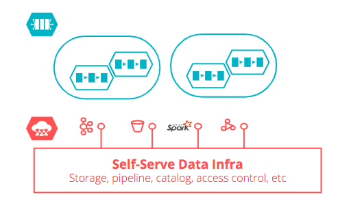
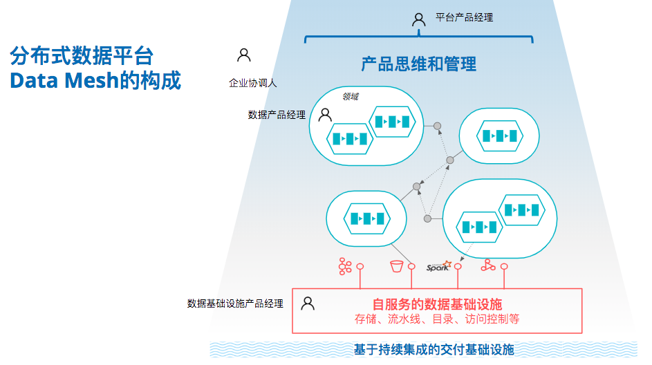

2019年我与ThoughtWorks的Zhamak Dehghani合作，提出一个分布式数据平台架构Data Mesh的架构思想和设计，并在真实客户企业中参与实施，本文是对这一思想和设计的总结，参考自《How to Move Beyond a Monolithic Data Lake to a Distributed Data Mesh》和实践中的深入思考。
传统数据平台改造、治理、基础设施、数据能力的构建方式可能需要基于一个完全不同于以往的逻辑，即企业数据平台（Data Platform）正在进入一个范例变革（Paradigm Shift）的阶段。
传统企业数据平台的演进
传统企业数据平台的演进主要有三个重要阶段：
- 第一阶段，基于企业级数据仓库的BI能力；
- 第二阶段，以数据湖为代表的大数据生态系统；
- 第三阶段，基于云的数据平台，亦为当前主流的混合实践模式，包含实时数据流处理架构、整合批量与流处理的框架、以及结合云端存储、流水线、以及机器学习能力。

企业数据平台的失败
NewVantage Partners公司从2012年起，面向财富1000企业管理层调研大数据和AI在其企业内的实施情况，该报告2019年揭示了整个企业数据平台领域的窘迫——尽管在大数据和AI领域投入超过5亿美元的公司较上一年增长了66%，在65家受访企业里回应「未能或尚早体现可量化业务结果」的企业增加了41%。
在研究企业数据平台项目失败案例中我们发现如下四个核心原因：
- 启动难：缺少用例支持，无法获得业务支持；长时间的数据湖设计与技术评估；需要统一组织内多个业务或技术部门；
- 数据源难以规模化：缺少手段对错综复杂的源数据系统进行疏浚与管理；难以跟上不断增长的数据源系统规模；
- 数据使用难以规模化：数据平台项目跟不上企业创新要求；用例过窄，难以满足规模化需求；平台能力跟不上错综复杂的用例需求；
- 难以实现数据商业化：极高的开发和运营成本；难以将数据平台真正转化为商业竞争力；难以形成创新文化。
如果我们把企业数据平台的成功要素集中在：在错综复杂的企业技术环境中快速启动；规模化地引入高价值的新数据源和使用场景；尽早实现数据对整个企业商业系统的价值（对内或对外）。
那么，我们需要怎样一种技术架构思想？
反思单体架构的模式
企业数据平台从第一到第三个阶段的演进过程中，无一例外地延续着一个单体架构（Monolithic Architecture）的核心模式，只是这个架构的表现形式从一个严格划分的数据仓库、变成被专业化和神秘化数据湖、最终转化成一个多种实践模式的混合。
在数据的产出与消费之间，总有一个庞然大物——
- 在分布在企业无数角落，在各种上下文中收集数据；
- 对数据进行清洗、扩充、和转换；
- 为数据的消费方，例如报表、分析、以及机器学习平台提供实时或批量的数据集。
这种单体式的架构思想在应用在构建企业数据平台时，自然出现了上文所述的巨大挑战——难以启动、难以规模化、以及难以商业化。最终结果，是大多企业数据平台项目在经历了三到五年的巨大投入后，难以获得预期收益。
在企业应用架构领域，微服务（Microservices）架构的出现可以被认为是对单体架构的反思，以微服务为代表的分布式架构拥有优势：
- 超大规模应用的持续构建和交付能力；
- 高业务复杂度业务上下文中更高细粒度的业务扩展；
- 独立部署带来的更高可用性；
- 可演进的技术栈。
单体式架构优势在于结构简单、数据一致性高、持续部署难度低，这一构架自然弱化了团队对频繁部署、团队灵活性、持续交付、以及技术债管理的需要。
在企业应用架构的上下文中，技术团队在选择微服务架构或单体式架构时所考虑的，是：
- 应用是否拥有一个庞大的代码体系同时又需要持续交付；
- 业务逻辑是否可能频繁出现更细粒度的扩展；
- 业务扩展是否对应用的可用性有极高需求；
- 技术债是否需要更激进的管理；
- 技术选型是否需要演进。
这些问题的答案如果都是「是」，那么团队就有理由转向分布式架构。
如果我们回到企业数据平台的上下文中来反思这五个问题：
- 目前企业广泛使用单体式架构，数据的沉淀、处理、和使用基本存在于错综复杂的源系统（Source Systems）中，其代码体系一定是庞大的；
- 数据创新的本质就是更细粒度业务的发现、实现、和规模化，数据使用场景一定发生频繁的细粒度扩展；
- 由于商业和法规环境的不同，数据场景的使用有极高的独立性，在地业务需要数据平台根据需求提供稳定且独特的数据服务；
- 数据平台面向的往往就是一个庞大的技术债，数据平台必须和技术债管理集中在一起考虑；
- 在云平台和开源数据工具蓬勃演进的今天，企业需要更快地引进新的数据工具和基础设施，其技术栈需要更快的演进。
从这五个反思我们可以大胆的提出，单体式企业数据平台必然需要向具有微服务特性的分布式数据平台演进。
什么是分布式数据平台Data Mesh？
一个分布式数据平台的核心是一组用面向域的数据或ML产品、用自服务的方式使用数据技术设施提供的数据流水线（清洗、组合、丰富等）或合规（数据鉴权、隐私、安全等）的公共服务、并接受数据产品思维的设计和管理，以及和企业交付基础设施深度集成。
其目的，是帮助企业：
- 在合规的基础上获得规模化的数据能力交付；
- 将规模化的数据能力引入到不同业务场景；
- 保持数据的质量、合规、以及安全性；
- 保持技术栈的多样性，吸引数据领域新的技术框架和数据人才。
一个具有分布式特点的企业数据平台，应该具备以下四个特点：
面向域的数据架构
面向域（Domain-oriented）的数据或ML产品是分布式数据平台最小的「业务单元」，它们相互合作承担了绝大部分平台可见的价值。一个典型的数据或ML产品的架构包含以下四个组件：
- 一组Polyglot数据接口（导入或导出）；
- 一个具有领域特点的边界；
- 一组内置的数据流水线；
- 一组连接基础设施控制接口（如日志）。

每一个数据或ML产品都具有独立的灵活技术栈选择、可发现、可寻址、自解释、合规、安全、可管理、可扩展、以及相互运营性。任何一个面向域的数据或ML产品都有以下特点：
- 支持一个端到端的用例（Use Case）；
- 连接数据生产（Production）和消费（Consumption）两端；
- 在生产和消费两端是一系列能力组成的价值链，并具有规模化的特性；
- 数据生产和消费方式是不断变化的；
- 关于如何使用这些产品，需要改变现有数据生产和消费的方式；
- 有可能根据需要裂变或重新组合；
这种分布式架构保证企业在更复杂多变的业务场景中获得最大灵活度且可扩展的数据能力。
自服务的平台基础设施
数据能力的构建是一项复杂的工程实践，分布式数据平台的另一个重要特性是将最具普遍代表性的基础设施使用行为进行自动化、中心化、和规模化。我们选取以下七项最重要的数据基础设施能力作为企业的优选：
- 数据快照Data Snapshotting；
- 源数据描述Self-describing Library;
- 原始副本Raw Copy；
- 数据产品模板Data Product Template；
- 数据格式转换Data Format Conversion；
- 数据流水线模板Data Pipeline Templates；
- 日志和追踪Logging & Traceability。
随着平台的逐渐成熟，不同行业选择什么样的基础设施，如何实现，都可能发生变化，企业需要根据自身情况选择最具有规模性和价值的能力进行投资。这些能力基于数据基础设施自服务平台、通过控制接口供给给独立的数据或ML产品，最终实现基础设施能力的自动化和规模化。

数据产品思维
数据或ML产品支持一个端到端的用例，且拥有生产和消费两端，这样的特性和应用领域的产品实践类似，数据产品思维提出了一个「数据产品经理」的概念，其职责包括：
- 管理用例，不断发现那些规模化的使用场景，修正现有用例，连接数据生产和消费两端；
- 管理价值链，决定数据产品所需要的核心能力，和技术架构师设计解决方案；
- 在企业洞察数据生产和消费的行为，鼓励正向行为（例如鼓励数据发现Data Discovery），修正那些不符合数据平台思想的行为，不断提高使用率（Adoption Rate）；
- 演进数据产品的设计。
同时，还有三个方向的产品思维需要思考.
首先，数据平台中两个基础设施（数据基础设施和ML基础设施）的建设需要通过产品管理的方式进行构建，原因有如下几点：
- 基础设施的建设范围和顺序，由其支持的数据或ML产品是否有规模化的使用需要决定；
- 对基础设施的使用方式也并非永恒不变，一方面来自于使用者（数据或ML产品）本身的需求变化，另外一方面则来自于工具集本身的快速演进（来自于开源社区或云），平台需要不断寻找更好的方式满足不断变化的需求；
- 使用新的基础设施工具同时产生新的行为和流程。
以上几点原因决定了数据或ML基础设施方向的产品经理以下职责：
- 决定所辖基础设施建设的路线图；
- 了解使用者的需求变化、紧跟开源社区或云端工具的变化，按照需要演进技术栈；
- 对新的流程和工具在组织内进行导入, 提高基础设施的使用率。
其次，分布式数据平台的构建必然挑战现有围绕在单体式架构系统的IT组织架构——数据的生产、存储、处理、和使用都被固化在每个单体系统中，其组织模式也一定是分散在每个系统中的。这意味着平台级的组织转型，需要在数据平台的基础上定义一个平台级的产品负责人，其职责包括：
- 洞察域以及边界，平衡多个域上下文的冲突问题，用高抽象的语言不不同域的数据生产者和消费者解释；
- 不断向业务部门和管理层描述数据平台的业务价值；
- 面对一个高内聚、低耦合的平台，建立必要的标准、工作方式、沟通原则等；
- 设定数据平台产品经理（数据/ML产品方向或基础设施方向）级的KPI，负责其成长。
最后，在我们的实践中发现，分布式数据平台的方式将挑战许多现有部门的工作方式，特别是信息安全、企业基础设施支持、合规、第三方数据提供商等。我们需一个组织级别协调者的存在，其职责包括：
- 协调其他部门，必要时抽调人员互相驻场以解决摩擦的问题；
- 在不同部门中宣传分布式数据平台对于企业向数据转型的价值；
- 对第三方数据提供商提出新的要求，可能涉及第三方的平台使用场景。
我们认为，这四类产品管理类岗位，是企业通过分布式数据平台进行企业数据战略转型的基础。
基于持续集成的交付基础设施
分布式数据平台的最终目的是在企业真正形成具备灵活性、规模化、以及演进性的数据能力平台，这就需要和企业现有的持续集成基础设施进行整合，整合场景包含：
- 分布在每个数据或ML产品中数据流水线的构建质量可以有统一的交付基础设施进行管理以及可视化；
- 所有自服务数据基础设施上的能力可以通过企业现有持续集成平台进行质量控制；
- 具体数据或ML产品提供能力可以通过现有持续集成平台进行质量保证。
到此，我们介绍了分布式数据平台的四个重要组成部分，它们分别是：
- 具有领域特征的数据或ML产品；
- 自服务的数据基础设施；
- 具有产品思维特性的管理方式和角色；
- 基于持续集成的交付基础设施。

写在最后
企业数据平台的演进经历了从数据仓库、到数据湖、再到云的过程，在过去的五年里，耗费巨资建设的数据平台难以获得预期收益，我们认为，以微服务（Microservices）为代表的分布式架构（Distributed Architrecture）思想，正在取代一体式架构（Monolithic Architecture）在数据领域正在引发一次范式变革。
互联网革新正在成为常态，企业正在向下一代、即数据企业进行演进，我们需要新的架构思想、技术实现、和组织结构。在这个背景下，我们提出了一个分布式数据平台Data Mesh的概念、架构设计、以及治理方式，它的目标是帮助企业获得与时俱进的、灵活且规模化的、面向业务领域的广泛数据能力，帮助企业实现数据转型。
下一篇，我们将谈到分布式数据平台Data Mesh的实施与挑战。